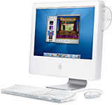
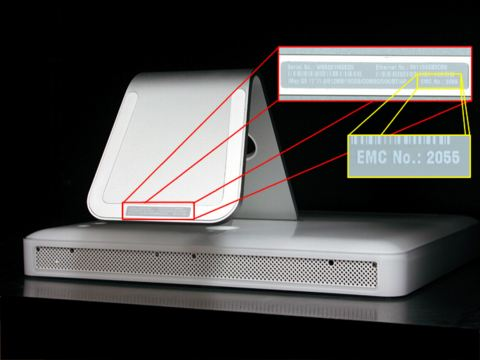
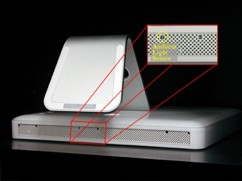
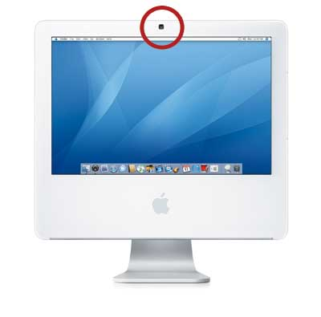

How to identify your iMac
Summary
The ever-popular iMac line of computers has been in existence in one form or another since 1998. The computers look slightly different in different eras. Look at the pictures below to identify which generation of iMac you have.
 CRT-based iMac G3s: article 58669 |
iMacs with G4 processors: article 86793 |
 iMacs with G5 and Intel processors: this article |
Products Affected
iMac
In August 2004, Apple introduced the first generation of iMac G5 that used a PowerPC G5 processor. In May 2005, an enhanced, second generation iMac G5 was introduced using the same design. In September 2005, a third generation of iMac G5 was introduced with a built-in iSight camera. In January 2006, an iMac with Intel processor and integrated iSight camera was introduced, and in August 2007 Apple introduced an Intel-based iMac with a glossy, widescreen display and an anodized aluminum frame.

You can identify these various iMac models in several ways. Just use one of the methods below to help you determine which model you have.
Check the EMC number on the bottom label
On the bottom of your iMac stand, you'll find a label with the serial number printed on it:

This label also provides other information, including the computer configuration and an "EMC" number (EMC No.). The EMC number is unique for different iMac models; just make note of the EMC number on the bottom of your computer and refer to the table below to identify your model.
| Generation | EMC No. | iMac model |
| First | 1989 | 17-inch iMac G5 |
| 2008 | 20-inch iMac G5 | |
| Second | 2055 | 17-inch iMac G5 (Ambient Light Sensor) |
| 2056 | 20-inch iMac G5 (Ambient Light Sensor) | |
| Third | 2081 | 17-inch iMac G5 (iSight) |
| 2082 | 20-inch iMac G5 (iSight) | |
| Intel Core Duo | 2104 | 17-inch iMac (Early 2006) |
| 2105 | 20-inch iMac (Early 2006) | |
| 2110 | 17-inch iMac (Mid 2006) | |
| Intel Core 2 Duo | 2124 | iMac (17-inch Late 2006 CD) |
| 2114 | iMac (17-inch Late 2006) | |
| 2118 | iMac (20-inch Late 2006) | |
| 2111 | iMac (24-inch) | |
| 2133 | iMac (20-inch Mid 2007) | |
| 2134 | iMac (24-inch Mid 2007) |
Check the marketing model number on the box
You'll find a sticker on the outside of the original iMac packaging that lists the marketing model number. Just match your number with one in the table below to find your iMac model. The two characters before the slash (/) vary by country, but the part number will be the same worldwide (we're using "xx" to represent these two variable characters below).
| Generation | Marketing model number | iMac model |
| First | M9248xx/A M9363xx/A |
17-inch iMac G5, 1.6 GHz |
| M9249xx/A M9823xx/A |
17-inch iMac G5, 1.8 GHz | |
| M9250xx/A M9824xx/A |
20-inch iMac G5, 1.8 GHz | |
| Second | M9843xx/A | 17-inch iMac G5 (Ambient Light Sensor), 1.8 GHz |
| M9844xx/A | 17-inch iMac G5 (Ambient Light Sensor), 2.0 GHz | |
| M9845xx/A | 20-inch iMac G5 (Ambient Light Sensor), 2.0 GHz | |
| Third | MA063xx/A | 17-inch iMac G5 (iSight), 1.9 GHz |
| MA064xx/A | 20-inch iMac G5 (iSight), 2.1 GHz | |
| Intel Core Duo | MA199xx/A | 17-inch iMac (Early 2006), 1.83 GHz Intel Core Duo |
| MA200xx/A | 20-inch iMac (Early 2006), 2.0 GHz Intel Core Duo | |
| MA406xx/A | 17-inch iMac (Mid 2006), 1.83 GHz Intel Core Duo | |
| Intel Core 2 Duo | MA710xx/A | iMac (17-inch Late 2006 CD) |
| MA590xx/A | iMac (17-inch Late 2006) | |
| MA589xx/A | iMac (20-inch Late 2006) | |
| MA456xx/A | iMac (24-inch) | |
| MA876XX/A | iMac (20-inch Mid 2007) | |
| MA877XX/A | iMac (20-inch Mid 2007) | |
| MA878XX/A | iMac (24-inch Mid 2007) |
Look for unique physical characteristics
Each generation adds new features...
Look at the underside of your iMac display. If you see an Ambient Light Sensor, you have a second generation iMac G5. The picture below shows a second generation iMac G5.

Look at the top center of your iMac—right above the display. If you see a built-in iSight camera, you have a third generation iMac G5 or an Intel-based iMac. The picture below shows a third generation iMac G5 with the built-in iSight camera circled. An iMac with an Intel Core Duo processor will look the same from this angle.

Tip: If your iMac has an iSight, look at the configuration code on the underside of the iMac stand. Every model has a label with configuration information on it. iMac G5 computers will list "iMac G5" in the configuration. iMac computers that use Intel processors will list "iMac" in their configuration.
The iMac (Mid 2007) models have a glossy, widescreen display and an anodized aluminum frame.
Compare details in System Profiler
From the Apple menu, choose About This Mac. The Processor listing will show the speed of the processor followed by the processor type. It will show PowerPC G5 for the iMac G5, iMac G5 (Ambient Light Sensor), and iMac G5 (iSight). For iMac (Early 2006) computers, the listing will show Intel Core Duo. If your About This Mac window lists PowerPC G5, then click More Info to open System Profiler. To determine which iMac G5 model you have, compare your computer's technical specifications to the specifications listed below.
iMac G5
The first generation iMac G5 was introduced in August 2004. Distinguishing features include:
- A 1.6 GHz PowerPC G5 processor with a 17-inch screen, or a 1.8 GHz PowerPC G5 processor with a 17- or 20-inch screen.
- Airport and Bluetooth are optional - if you have Airport and Bluetooth, you ordered them as a CTO extra when you bought the computer.
- Comes with an NVIDIA GeForce FX 5200 Ultra video card.
iMac G5 (Ambient Light Sensor)
The iMac G5 (Ambient Light Sensor) was introduced in May 2005. This computer has several features that distinguish it from the original iMac G5:
- A 1.8 GHz PowerPC G5 processor with a 17-inch screen, or a 2.0 GHz PowerPC G5 processor with a 17- or 20-inch screen.
- Airport and Bluetooth are standard.
- Comes with an ATI Radeon 9600 video card.
iMac G5 (iSight)
The iMac G5 (iSight) was introduced in September 2005. This computer has several features that distinguish it from the other iMac G5s:
- A 1.9 GHz PowerPC G5 processor with a 17-inch screen, or a 2.1 GHz Power PC G5 processor with a 20-inch screen.
- Comes with an ATI Radeon X600 video card.
- Comes with a built-in iSight camera.
iMac (Early 2006)
The iMac (Early 2006) was introduced in January 2006. This computer has several features that distinguish it from the iMac G5:
- A 1.83 GHz Intel Core Duo processor with a 17-inch screen, or a 2.0 GHz Intel Core Duo processor with a 20-inch screen.
- Comes with an ATI Radeon X1600 video card using PCI Express.
- Comes with a mini-DVI video out port.
iMac (Mid 2006)
The iMac (Mid 2006) was introduced in July 2006. This computer has several features that distinguish it from the iMac (Early 2006):
- A 1.83 GHz Intel Core Duo processor with a 17-inch screen AND
- Comes with the Intel GMA950 graphics processor using shared main memory.
- Comes with a Combo drive (reads DVDs and CDs, writes CDs)
- Does NOT come with built-in Bluetooth
iMac (Late 2006)
The iMac (Late 2006) models of computer were introduce in September 2006. This computer has several features that distinguish it from previous Intel-based iMac computers introduced in 2006:
- Intel Core 2 Duo processors running at up to 2.33 GHz
- LCD display sizes of 17-inch, 20-inch and 24-inch
- Optical digital audio output
iMac (Mid 2007)
The iMac (Mid 2007) models were introduced in August 2007. This computer has several features that distinguish it from previous Intel-based iMac computers introduced in 2006:
- Intel Core 2 Duo processors running at up to 2.8 GHz
- Glossy, widescreen display in 20-inch and 24-inch sizes
- Optical digital audio input
- Anodized aluminum frame